2.Tác tử học từ tương tác
Muốn mô tả học từ hậu quả, phải tách tác tử khỏi môi trường và ghi lịch sử tương tác.
Tác tử · Môi trường · Trạng thái và quan sát · Lịch sử · Mô hình cố định
Robot dọn dãy bốn ô
Nhu cầu: mô tả ai chọn hành động, ai trả phản hồi, và robot biết gì.
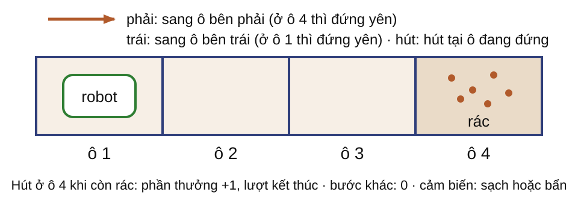
Robot ở ô 1, rác ở ô 4; lượt bị cắt sau $L=5$ hành động.
Ví dụ: một lượt của robot dọn dãy bốn ô
| $t$ | Vị trí | $O_t$ | $A_t$ | $R_{t+1}$ |
|---|
| $0$ | ô 1 | sạch | phải | $0$ |
| $1$ | ô 2 | sạch | phải | $0$ |
| $2$ | ô 3 | sạch | phải | $0$ |
| $3$ | ô 4 | bẩn | hút | $+1$ |
Diễn giải: $T=4$; chỉ $R_4=1$ khác $0$, ba phần thưởng đầu không cho biết sang phải có ích.
Vòng tương tác tác tử–môi trường
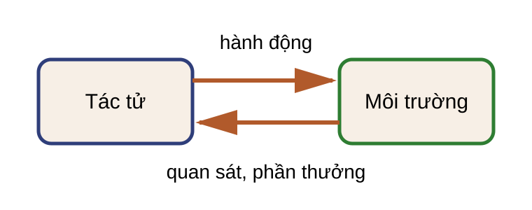
Trực quan. Robot chỉ điều khiển hành động; dãy ô, rác và cảm biến quyết định phản hồi.
Định nghĩa. Tác tử (agent) là bộ phận nhận $O_t$ rồi chọn $A_t$.
Môi trường (environment) là mọi thứ ngoài tác tử: nhận $A_t$, trả $R_{t+1}$ và $O_{t+1}$.
Vòng tương tác là dãy $O_0,A_0,R_1,O_1,A_1,R_2,\dots$, dừng tại $T$.
Trạng thái, quan sát và lịch sử
Trực quan. Ô 1, 2, 3 cùng cho sạch nhưng khác tình huống.
Định nghĩa. Trạng thái (state) $S_t\in\mathcal S$ là cấu hình môi trường quyết định phân phối của $(R_{t+1},S_{t+1})$ khi biết $A_t$.
Quan sát (observation) $O_t\in\mathcal O$ là thông tin tác tử nhận ở bước $t$; đầy đủ khi $O_t=S_t$.
Lịch sử $H_t=(O_0,A_0,R_1,\dots,A_{t-1},R_t,O_t)$ gồm mọi thứ tác tử đã thấy và đã làm.
Ví dụ: trạng thái và quan sát của robot
$\mathcal S$ gồm tám cặp (vị trí, tình trạng ô 4); $S_0=$ (1, còn rác).
$\mathcal O=$ {sạch, bẩn}; $O_t=$ bẩn khi và chỉ khi robot ở ô 4 còn rác.
Sau ba lần phải: $H_3=$ (sạch, phải, 0, sạch, phải, 0, sạch, phải, 0, bẩn).
Diễn giải: ô 1 và ô 3 cùng cho sạch nhưng cần ba và một lần phải.
Bài tập: trạng thái và quan sát của robot
Câu hỏi: robot bắt đầu ở ô 3, rác ở ô 4, $L=5$.
(a) Viết $S_0$, $O_0$ và tập hành động hợp lệ.
(b) Robot chọn phải ở bước $0$. Viết $R_1,S_1,O_1$ và $H_1$.
(c) Liệt kê mọi trạng thái chưa kết thúc lượt cho cùng quan sát với $S_0$;
mỗi trạng thái cần mấy lần phải để tới rác.
Bài tập: trạng thái và quan sát của robot
Lời giải: (a) $S_0=$ (3, còn rác), $O_0=$ sạch; tập hành động {trái, phải, hút}.
(b) Sang ô 4, chưa hút: $R_1=0$, $S_1=$ (4, còn rác), $O_1=$ bẩn.
$H_1=$ (sạch, phải, 0, bẩn).
(c) Ô 4 còn rác, robot ở ô 1, 2, 3: cùng thấy sạch; cần ba, hai, một lần phải.
Ở bước 0, robot không biết mình cần mấy lần phải.
Điều khiển với mô hình cố định
Nhu cầu: xác định khi nào chương trình viết sẵn là đủ, khi nào phải học.
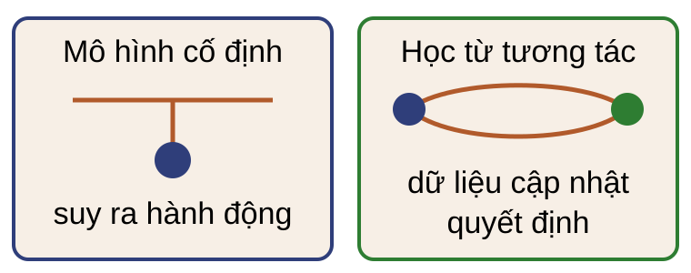
Ví dụ. Biết trước rác ở ô 4: chương trình phải, phải, phải, hút giải xong.
Khi điều biết trước không còn đúng, tác tử cần ghi nhớ, thích nghi và khái quát.
Giới hạn của mô hình cố định
- Môi trường đổi: rác sang ô 2 thì chương trình viết sẵn nhận $0$.
- $3^{50}\approx7{,}2\cdot10^{23}$ chuỗi khi $L=50$: không liệt kê để chọn được.
- Kết quả ngẫu nhiên: dãy hành động cố định không phản ứng được với kết quả thực.
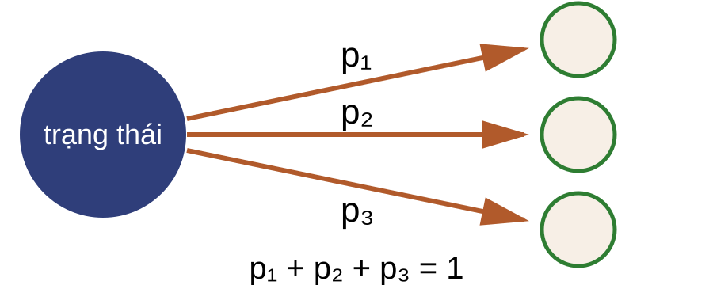
Môi trường đổi hoặc luật ngẫu nhiên chưa biết: cập nhật quyết định từ tương tác.
Ví dụ: AlphaGo và thao tác robot
AlphaGo trong cờ vây
Một mạng chọn nước, một mạng đánh giá thế cờ, cùng tìm kiếm cây (tree search).
Thao tác robot
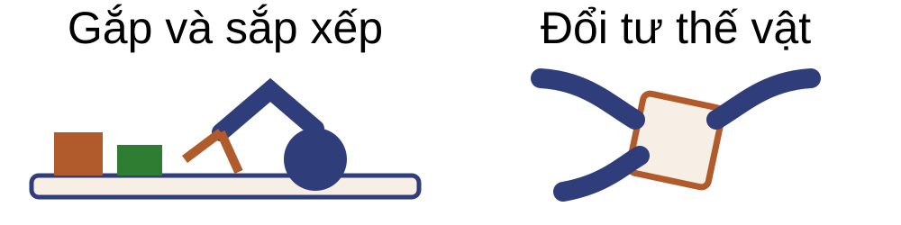
Khi phần thưởng chỉ đặt ở bước cuối, kết quả chỉ biết sau cả chuỗi lệnh.
Câu hỏi: trong mỗi trường hợp, xác định tác tử, hành động và phần thưởng.
3.Tín hiệu học và dữ liệu tương tác
Muốn nhận dạng bài toán Học tăng cường, phải so phần thưởng với nhãn và xét thứ tự dữ liệu.
Học có giám sát · Học không giám sát · Phần thưởng · Dữ liệu không độc lập
Phần thưởng và nhãn
Nhu cầu: phân biệt tín hiệu của Học tăng cường với nhãn.
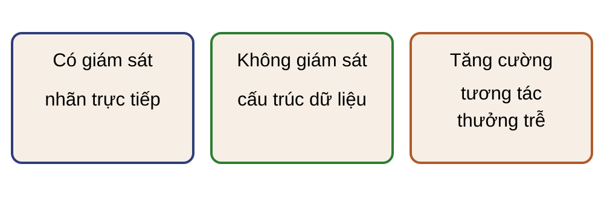
Một nhãn ở ô 1 sẽ ghi: hành động đúng là phải.
Phần thưởng ở ô 1: phải cho $R_1=0$, trái cũng cho $R_1=0$.
Phần thưởng chỉ đánh giá hành động đã chọn, không nói trái hay phải đúng.
Ví dụ: đổi thứ tự các mẫu tương tác
Trực quan. Dữ liệu có nhãn là tập, dữ liệu tương tác là dãy.
Lượt của robot: ba mẫu (sạch, phải, 0), rồi (bẩn, hút, 1).
Đưa mẫu cuối lên đầu: bước $0$ đòi thấy bẩn, nhưng ô 1 sạch.
Dãy mới không xảy ra được.
Với dữ liệu có nhãn, $\frac13\sum_{i=1}^{3}\ell(f(x_i),y_i)$ không đổi khi đổi thứ tự.
Học có giám sát và học không giám sát
Định nghĩa. Học có giám sát (supervised learning) là học từ tập $\{(x_i,y_i)\}_{i=1}^n$ cho trước; nhãn $y_i$ là đầu ra đúng:
$$\min_f\ \frac1n\sum_{i=1}^n\ell\big(f(x_i),y_i\big).$$
Học không giám sát (unsupervised learning) là học từ tập $\{x_i\}_{i=1}^n$ không nhãn, tìm cấu trúc như các cụm.
Cả hai học từ dữ liệu có sẵn; người học không làm đổi dữ liệu.
Học tăng cường
Định nghĩa. Học tăng cường là học từ dãy tương tác $O_0,A_0,R_1,O_1,\dots$ mà tác tử tự chọn hành động.
Tín hiệu là phần thưởng $R_{t+1}\in\mathbb R$, một số đánh giá chuyển vừa xảy ra.
Mục tiêu là chọn hành động làm lớn kỳ vọng của tổng phần thưởng về sau.
Hai đặc trưng: thử và sai (trial-and-error) và phản hồi trễ.
Bốn khác biệt của Học tăng cường
- Không có người giám sát: robot nhận $0,0,0,1$, không nhận hành động đúng.
- Phản hồi trễ: $+1$ đến ở $R_4$, sau ba phần thưởng $0$.
- Mẫu liên tiếp phụ thuộc nhau: ở ô 3 chọn phải thì bước sau thấy bẩn.
- Hành động định hình dữ liệu: luôn sang trái thì không bao giờ thấy bẩn.
Bài tập: nhận dạng tín hiệu học
Câu hỏi: xếp mỗi tình huống vào một dạng học, nêu tín hiệu.
(a) $1\,000$ ảnh ô sàn gán nhãn sạch, bẩn; đoán nhãn ảnh mới.
(b) $1\,000$ ảnh ô sàn không nhãn; chia nhóm giống nhau.
(c) Robot: phải, hút, phải, phải, hút; phần thưởng $0,0,0,0,1$.
(d) Sinh viên mỗi tuần chọn cách học, biết điểm ở cuối kỳ.
Bài tập: nhận dạng tín hiệu học
Lời giải: (a) Học có giám sát; tín hiệu là nhãn của từng ảnh.
(b) Học không giám sát; tiêu chí là độ giống nhau trong nhóm.
(c) Học tăng cường; phần thưởng $0,0,0,0,1$ đến trễ, dữ liệu do robot sinh.
(d) Học tăng cường: một số đánh giá, đến sau cả chuỗi, lựa chọn đổi trải nghiệm.
4.Phần thưởng và lợi tức
Muốn đo hậu quả dài hạn của hành động, phải cộng các phần thưởng đến khi lượt kết thúc.
Phần thưởng · Lượt · Lợi tức · Hệ thức đệ quy · Giả thuyết phần thưởng
Phần thưởng trễ trên một lượt
Nhu cầu: đo hậu quả của $A_0$ khi $+1$ chỉ đến ở $R_4$.
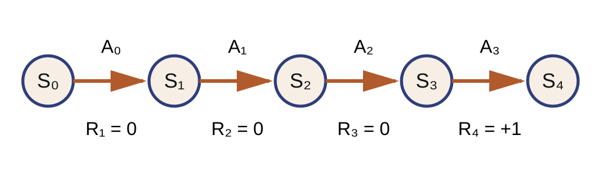
Trực quan. Hậu quả của $A_t$ gồm $R_{t+1}$ và mọi phần thưởng về sau.
Ví dụ. Tổng còn lại từ bước $0,\dots,4$ là $1,1,1,1,0$, dù $R_1=R_2=R_3=0$.
Mỗi tổng bằng phần thưởng kế tiếp cộng tổng của bước sau: $1=0+1$, $1=1+0$.
Phần thưởng, lượt và thời điểm kết thúc
Định nghĩa. Phần thưởng (reward) $R_{t+1}\in\mathbb R$ là số môi trường trả sau $A_t$ cho chuyển vừa xảy ra.
Lượt (episode) là dãy tương tác từ bước $0$ tới một sự kiện kết thúc hoặc tới hành động thứ $L$.
Thời điểm kết thúc $T$ là số hành động khi lượt dừng; $T$ ngẫu nhiên, $T\le L$.
Quỹ đạo (trajectory) là dãy $S_0,A_0,R_1,S_1,\dots,A_{T-1},R_T,S_T$.
Lợi tức
Định nghĩa. Lợi tức (return) từ bước $t$, $t=0,\dots,T$, là tổng các phần thưởng đến sau bước $t$:
$$G_t=\sum_{k=t+1}^{T}R_k=R_{t+1}+R_{t+2}+\dots+R_T,\qquad G_T=0.$$
Ví dụ. Robot với $(R_1,\dots,R_4)=(0,0,0,1)$: $G_0=G_1=G_2=G_3=1$, $G_4=0$.
Hệ thức đệ quy của lợi tức
Mệnh đề. Với một lượt kết thúc tại $T$ hữu hạn và mọi $t=0,\dots,T-1$:
$$G_t=R_{t+1}+G_{t+1},\qquad G_T=0.$$
Ý nghĩa: mọi $G_t$ của một lượt đã ghi tính được ngược từ $G_T=0$, mỗi bước một phép cộng.
Chứng minh. Tách số hạng $k=t+1$ khỏi tổng $\sum_{k=t+1}^{T}R_k$; phần còn lại là $G_{t+1}$.
Ví dụ: lợi tức khi di chuyển có chi phí
Robot từ ô 1, $L=4$; trái, phải có phần thưởng $-c$, $c=0{,}1$; hút ô sạch $0$; hút được rác $+1$.
Lượt phải, phải, phải, hút: $(R_1,\dots,R_4)=(-0{,}1;\,-0{,}1;\,-0{,}1;\,1)$. Tính $G_t$ ngược.
$G_4=0$; $G_3=1+0=1$; $G_2=-0{,}1+1=0{,}9$.
$G_1=-0{,}1+0{,}9=0{,}8$; $G_0=-0{,}1+0{,}8=0{,}7$.
Diễn giải: hút trước cho $0$ nhưng còn ba hành động, không tới được rác: lợi tức lớn nhất $0\lt 0{,}7$.
Bài tập: lợi tức trên dãy bốn ô có ghế
Câu hỏi: robot từ ô 1; va vào ghế cho phần thưởng $-1$.
Một lượt có $(R_1,R_2,R_3,R_4)=(0,-1,0,1)$ và kết thúc ở $T=4$.
(a) Tính $G_4,G_3,G_2,G_1,G_0$ ngược bằng hệ thức đệ quy; kiểm $G_0$ bằng tổng trực tiếp.
(b) Trong các bước $t=0,1,2,3$, bước nào có $G_t\lt R_4$, và vì sao.
Bài tập: lợi tức trên dãy bốn ô có ghế
Lời giải: (a) $G_4=0$; $G_3=1+0=1$; $G_2=0+1=1$.
$G_1=-1+1=0$; $G_0=0+0=0$; tổng trực tiếp $0+(-1)+0+1=0$.
(b) $G_0=G_1=0\lt 1$: hai lợi tức này còn chứa $R_2=-1$ của bước va ghế.
Từ bước $2$, phần thưởng $-1$ đã ở quá khứ, nên $G_2=G_3=1$.
Giả thuyết phần thưởng
Nhận xét. Giả thuyết phần thưởng (reward hypothesis) phát biểu rằng
mọi mục tiêu mô tả được bằng việc làm lớn nhất kỳ vọng của tổng phần thưởng.
Lượt hữu hạn: chọn cách hành động để $\mathbb E[G_0]$ lớn nhất.
Cờ: thắng, hòa, thua thành $+1,0,-1$ ở cuối ván.
Lưu ý: đây là giả thuyết mô hình hóa, không phải định lý.
Ví dụ: phần thưởng bỏ sót mục tiêu
Robot từ ô 1, $L=5$; hút ở ô 2 làm đổ bình hoa đặt ở đó.
Lượt A là phải, phải, phải, hút: $T=4,\ G_0=1$.
Lượt B là phải, hút, phải, phải, hút: $T=5,\ G_0=1$, bình hoa đổ.
Thêm $-1$ cho bước làm đổ: lượt B có $(R_1,\dots,R_5)=(0,-1,0,0,1),\ G_0=0$.
Câu hỏi: nêu một mục tiêu khác mà phần thưởng này còn bỏ sót.
5.Chính sách, hàm giá trị, mô hình và thăm dò
Muốn chọn theo kỳ vọng lợi tức, phải tách chọn khỏi đánh giá và ước lượng khi thiếu dữ liệu.
Chính sách · Hàm giá trị · Mô hình · Thăm dò · Khai thác
Chọn nước và đánh giá thế cờ
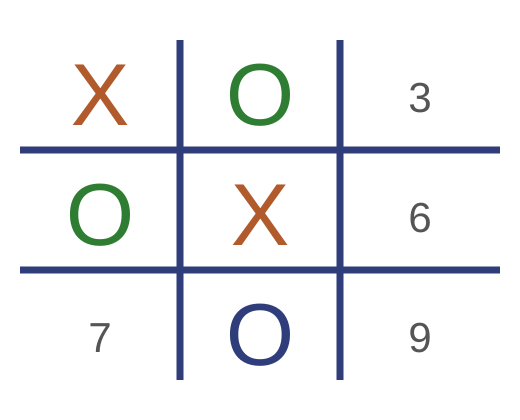
Nhu cầu: ở thế cờ $s$ trên hình, đến phiên X, tách việc chọn nước khỏi việc đánh giá.
Quy tắc thắng ngay chọn ô 9 với xác suất $1$.
Quy tắc chọn đều chọn ô 9 với xác suất $\frac14$.
Lợi tức là $+1$ dưới quy tắc thắng ngay; dưới quy tắc chọn đều còn tùy các nước sau.
Chính sách
Trực quan. Chọn nước là quy tắc trả về phân phối trên các nước.
Định nghĩa. Chính sách $\pi$ gán mỗi lịch sử $h$ một phân phối $\pi(\cdot\mid h)$ trên hành động hợp lệ:
$$\pi(a\mid h)\ge0,\qquad \sum_a\pi(a\mid h)=1.$$
Chính sách xác định (deterministic policy) dồn mọi xác suất vào một hành động.
Ví dụ. $\pi_w$ thắng ngay nếu có; $\pi_u$ chọn đều; $\pi_1$: sạch thì phải, bẩn thì hút.
Ví dụ: giá trị của một thế cờ hai ô trống
Thế cờ $s'$ có X ở ô $1,3,5$ và O ở ô $2,4,7,8$, đến phiên X.
Phần thưởng của X: $+1$ thắng, $-1$ thua, $0$ còn lại.
X đánh 9: thắng theo 1–5–9. X đánh 6: O đánh 9, thắng theo 7–8–9.
Kỳ vọng của lợi tức dưới $\pi_u$ là $\frac12(+1)+\frac12(-1)=0$, dưới $\pi_w$ là $1$.
Diễn giải: cùng thế cờ, hai chính sách, hai giá trị.
Hàm giá trị
Định nghĩa. Với luật môi trường cố định, giá trị của lịch sử $h$ đến bước $t$ dưới $\pi$ là
$$v_\pi(h)=\mathbb E_\pi\big[G_t\mid H_t=h\big],$$
kỳ vọng theo $\pi$ từ bước $t$ và theo luật của môi trường.
Hàm giá trị (value function) là ánh xạ $h\mapsto v_\pi(h)$; lượt đã kết thúc thì $v_\pi(h)=0$.
Ý nghĩa: phần thưởng đánh giá một chuyển, giá trị đánh giá cả phần còn lại.
Bài tập: giá trị của robot dưới chính sách ngẫu nhiên
Câu hỏi: robot từ ô 1, rác ở ô 4; chỉ dùng phải và hút; lượt bị cắt sau $L=4$.
Chính sách $\pi$ chọn phải hoặc hút, mỗi hành động xác suất $\frac12$; $h_0$ là lịch sử ban đầu.
(a) $G_0$ nhận những giá trị nào.
(b) Tính $v_\pi(h_0)$.
(c) Tính $v_{\pi_1}(h_0)$ và so với câu (b).
Bài tập: giá trị của robot dưới chính sách ngẫu nhiên
Lời giải: (a) $G_0=1$ nếu hút được rác trong bốn hành động, $G_0=0$ nếu không.
(b) Cần đúng dãy phải, phải, phải, hút: $\Pr(G_0=1)=\big(\frac12\big)^4=\frac1{16}$.
Suy ra $v_\pi(h_0)=1\cdot\frac1{16}+0\cdot\frac{15}{16}=\frac1{16}$.
(c) Dưới $\pi_1$, lượt luôn là phải, phải, phải, hút, nên $v_{\pi_1}(h_0)=1$.
Cùng lịch sử $h_0$: $v_\pi(h_0)=\frac1{16}\lt 1=v_{\pi_1}(h_0)$.
Ví dụ: mô hình đúng và mô hình sai của robot
Nhu cầu: thử trước hành động mà không tác động lên môi trường thật.
Robot từ ô 1, $L=5$, có bản mô phỏng dự báo phần thưởng.
M1 đúng luật: trong $81$ dãy bốn hành động, chỉ phải, phải, phải, hút cho tổng $1$.
M2 ghi nhầm rác ở ô 3: dự báo $\widehat R_3=1$ cho phải, phải, hút; thật ra $R_3=0$.
Mô hình của môi trường
Định nghĩa. Mô hình (model) là bộ dự báo $(\widehat S_{t+1},\widehat R_{t+1})$ từ trạng thái hoặc lịch sử và hành động.
Lập kế hoạch (planning) là dùng mô hình để xét trước diễn biến.
Phương pháp có mô hình (model-based) lập kế hoạch.
Phương pháp phi mô hình (model-free) học chính sách hoặc hàm giá trị trực tiếp từ dữ liệu.
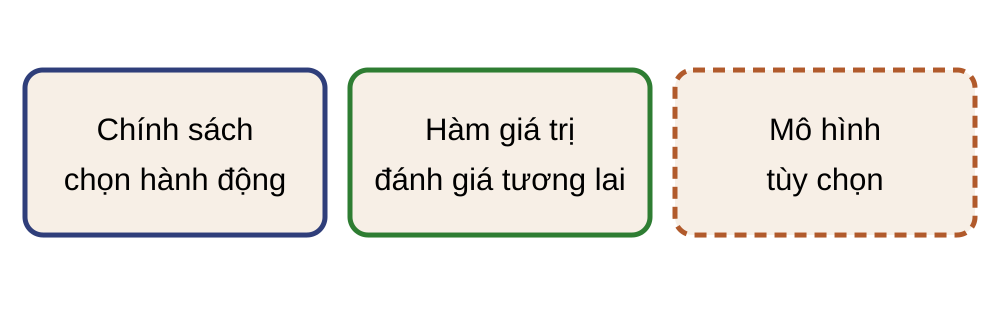
Chọn chế độ hút khi thiếu dữ liệu
Nhu cầu: không có mô hình, giá trị phải ước lượng từ ít mẫu.
Bài toán một bước, lặp lại: hai chế độ hút; phần thưởng là tỉ lệ bụi hút sạch.
| Chế độ $a$ | Số lần thử $N(a)$ | Tổng phần thưởng | Trung bình mẫu $\bar r(a)$ |
|---|
| A | $20$ | $12{,}00$ | $0{,}60$ |
| B | $2$ | $1{,}10$ | $0{,}55$ |
Hai lần dùng chế độ B cho phần thưởng $0{,}50$ và $0{,}60$.
Ví dụ: hai chế độ hút
Trực quan. Ước lượng từ ít mẫu có thể sai nhiều.
Theo ước lượng, $\bar r(\mathrm A)=0{,}60>0{,}55=\bar r(\mathrm B)$: chọn A.
Thử B thêm lần nữa, $r\in[0,1]$: $\bar r(\mathrm B)=\frac{1{,}1+r}{3}\in\big[\frac{11}{30},\frac{7}{10}\big]\approx[0{,}367;\,0{,}700]$.
Thử A thêm một lần: trung bình mới thuộc $\big[\frac{12}{21},\frac{13}{21}\big]$, rộng $\frac1{21}$.
Diễn giải: khoảng của B chứa $0{,}60$; một lần thử B có thể đổi quyết định.
Thăm dò và khai thác
Định nghĩa. Sau $N(a)\ge1$ lần chọn hành động $a$, trung bình mẫu là
$$\bar r(a)=\frac1{N(a)}\sum_{i=1}^{N(a)}r_i(a).$$
Khai thác (exploitation) là chọn hành động tham lam (greedy), thuộc $\arg\max_a\bar r(a)$.
Thăm dò (exploration) là chọn hành động không tham lam.
Chính sách có thăm dò nếu thăm dò với xác suất dương.
Thăm dò và khai thác trong Tic-tac-toe
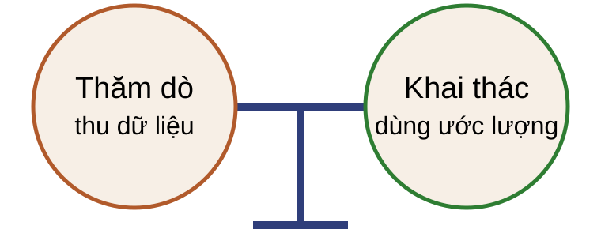
Ví dụ. Nước dẫn tới thế cờ có giá trị ước lượng cao nhất là nước khai thác.
Nước không dẫn tới giá trị ước lượng cao nhất là nước thăm dò, như chọn chế độ B.
Luôn khai thác: thế cờ chưa thử có thể không bao giờ được thử.
Bài tập: chọn chế độ hút
| Chế độ $a$ | Số lần thử $N(a)$ | Tổng phần thưởng | Trung bình mẫu $\bar r(a)$ |
|---|
| A | $20$ | $12{,}00$ | $0{,}60$ |
| B | $2$ | $1{,}10$ | $0{,}55$ |
Câu hỏi: (a) Nêu hành động tham lam; chọn B là khai thác hay thăm dò.
(b) Thử B thêm một lần, nhận $0{,}90$: tính $N(\mathrm B)$, $\bar r(\mathrm B)$, hành động tham lam mới.
(c) Làm lại câu (b) với phần thưởng $0{,}40$.
Bài tập: chọn chế độ hút
Lời giải: (a) $0{,}60>0{,}55$, nên A là hành động tham lam; chọn B là thăm dò.
(b) $N(\mathrm B)=3$, $\bar r(\mathrm B)=\frac{0{,}50+0{,}60+0{,}90}{3}\approx0{,}667>0{,}60$: B thành tham lam.
(c) $N(\mathrm B)=3$, $\bar r(\mathrm B)=\frac{1{,}50}{3}=0{,}50$: A vẫn tham lam.
Hai trung bình mới nằm trong khoảng $\approx[0{,}367;\,0{,}700]$ của ví dụ.
6.Tic-tac-toe như một bài toán Học tăng cường
Muốn chọn nước bằng giá trị, phải tách kỳ vọng lợi tức thành phần thưởng và giá trị kế tiếp.
Mô hình hóa · Cây trò chơi · Phân tích một bước · Khai thác · Học từ ván chơi
Ví dụ: thế cờ bốn ô trống
Nhắc lại: thế cờ $s$ của phần 5; $\pi_w$ chọn ô 9; $v_{\pi_u}(s)$ chưa tính.
O có ba quân, X có hai: O đi trước, nay đến phiên X; $\mathcal A(s)=\{3,6,7,9\}$.
Bước $t$ đếm số nước X đã đi: $s$ ở $t=2$; lượt kết thúc chậm nhất ở $T=4$.
Giả thiết: O chọn đều trên các ô trống.
Cây trò chơi
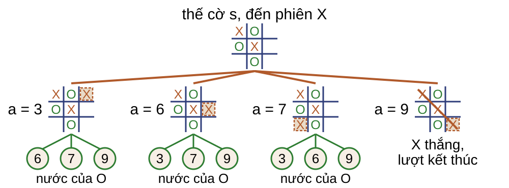
Cây trò chơi (game tree): nút là thế cờ, cạnh là nước đi hợp lệ.
Sau một nước của X và một nước của O: $1+3\cdot3=10$ nhánh.
Gán giá trị cho thế cờ kế tiếp thì mỗi nước chỉ cần nhìn một bước.
Mô hình hóa Tic-tac-toe
Định nghĩa. Tác tử là X; môi trường gồm bàn cờ, luật chơi, đối thủ O.
Bước $t=0,1,\dots$ đếm số nước X đã đi.
Trạng thái $S_t$ là thế cờ khi đến phiên X; $O_t=S_t$.
Tập hành động hợp lệ $\mathcal A(s)$ là tập ô trống của $s$.
O theo chính sách cố định $\sigma(\cdot\mid\tilde s)$ tại thế cờ $\tilde s$ đến phiên O; chọn đều.
Luật một bước của Tic-tac-toe
- Đặt quân X vào ô $A_t$.
- X có ba quân thẳng hàng: $R_{t+1}=+1$, lượt kết thúc.
- Nếu không và bàn đầy: $R_{t+1}=0$, hòa.
- Nếu không, O đánh theo $\sigma$: O thắng thì $R_{t+1}=-1$; bàn đầy thì hòa; còn lại $R_{t+1}=0$ và sang $S_{t+1}$.
Lưu ý: nước của O thuộc môi trường; phần thưởng $-1$ thuộc chuyển từ $S_t$.
Bài tập: biểu diễn một thế cờ có ô 2, 6, 8 trống
Câu hỏi: thế cờ $u$ có X ở ô $3,4,9$, O ở ô $1,5,7$, trống ô $2,6,8$.
(a) Xác định ai đi trước, đến phiên ai, và $\mathcal A(u)$.
(b) Một biểu diễn cho X chọn ô 5. Chỉ ra chỗ sai.
(c) X đánh ô 6: tính $R_{t+1}$ và giá trị của lịch sử ngay sau đó.
Bài tập: biểu diễn một thế cờ có ô 2, 6, 8 trống
Lời giải: (a) Hai bên cùng ba quân: X đi trước, nay đến phiên X.
Đường 1–5–9, 3–5–7, 1–4–7 đều có cả X lẫn O: chưa ai thắng; $\mathcal A(u)=\{2,6,8\}$.
(b) Ô 5 đã có quân O, nên $5\notin\mathcal A(u)$.
(c) X có cột 3–6–9: $R_{t+1}=+1$, lượt kết thúc; giá trị sau đó bằng $0$.
Rút gọn lịch sử thành thế cờ
Nhận xét. Giả sử ba điều kiện:
- quan sát đầy đủ, $O_t=S_t$;
- $\sigma(\cdot\mid\tilde s)$ chỉ phụ thuộc thế cờ $\tilde s$;
- $\pi(a\mid h)=\pi(a\mid s)$ khi $h$ kết thúc bằng thế cờ $s$.
Khi đó hai lịch sử cùng kết thúc bằng $s$ có cùng giá trị, viết $v_\pi(s)$.
Chứng minh. Quy nạp theo bước: phần còn lại của lượt chỉ phụ thuộc $s$.
Ví dụ: thế cờ bốn ô trống, kỳ vọng từng nước
Nhu cầu: ở thế cờ $s$ (X: ô $1,5$; O: ô $2,4,8$), so bốn nước theo kỳ vọng lợi tức.
| $a$ | $R_{t+1}$ | O đánh | $v_{\pi_u}$ của thế cờ kế tiếp | Kỳ vọng lợi tức |
|---|
| $3$ | $0$ | $6;\ 7;\ 9$ | $1;\ 0;\ 0$ | $\dfrac13$ |
| $6$ | $0$ | $3;\ 7;\ 9$ | $\frac12;\ 0;\ -\frac12$ | $0$ |
| $7$ | $0$ | $3;\ 6;\ 9$ | $\frac12;\ 1;\ \frac12$ | $\dfrac23$ |
| $9$ | $+1$ | kết thúc | $0$ | $1$ |
Ví dụ: thế cờ bốn ô trống, giá trị
Dưới $\pi_u$, X chọn mỗi nước với xác suất $\frac14$:
$$v_{\pi_u}(s)=\tfrac14\big(\tfrac13+0+\tfrac23+1\big)=\tfrac12.$$
Theo kết quả cuối: X thắng $\frac23$, O thắng $\frac16$, hòa $\frac16$; $\frac23-\frac16=\frac12$.
Kỳ vọng lớn nhất ở $a=9$, nhỏ nhất ở $a=6$.
Diễn giải: mỗi nước được so bằng phần thưởng một bước cộng giá trị kế tiếp.
Phân tích một bước
Mệnh đề. Luật cố định, lượt hữu hạn, $h$ chưa kết thúc, $a$ hợp lệ:
$$\mathbb E_\pi\big[G_t\mid H_t=h,A_t=a\big]=\mathbb E\big[R_{t+1}+v_\pi(H_{t+1})\mid H_t=h,A_t=a\big],$$
$$v_\pi(h)=\sum_a\pi(a\mid h)\,\mathbb E_\pi\big[G_t\mid H_t=h,A_t=a\big].$$
Thêm ba điều kiện rút gọn: vế phải đầu là $\mathbb E\big[R_{t+1}+v_\pi(S_{t+1})\mid S_t=s,A_t=a\big]$.
Chứng minh. Lấy kỳ vọng hai vế của $G_t=R_{t+1}+G_{t+1}$, điều kiện hóa theo $H_{t+1}$.
Nước khai thác một bước
Giả thiết: ba điều kiện rút gọn; $s$ chưa kết thúc.
Định nghĩa. Nước khai thác một bước theo $v_\pi$ là
$$a^*\in\arg\max_{a\in\mathcal A(s)}\mathbb E\big[R_{t+1}+v_\pi(S_{t+1})\mid S_t=s,A_t=a\big].$$
Dạng khác: trên lịch sử, không cần ba điều kiện: thay $s,\ S_{t+1},\ \mathcal A(s)$ bằng $h,\ H_{t+1},\ \mathcal A(h)$.
Phá hòa (tie-breaking) theo quy tắc cố định; ở $s$ với $\pi_u$: $a^*=9$.
Lưu ý: $a^*$ phụ thuộc $\pi$, chưa chắc tối ưu, cần mô hình đối thủ.
Học giá trị thế cờ từ các ván đã chơi
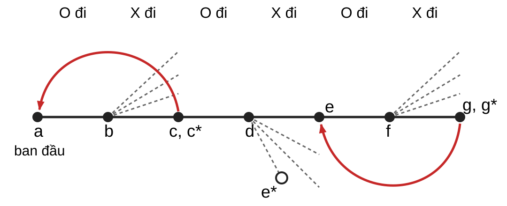
Không biết $\sigma$: ước lượng giá trị của từng thế cờ từ các ván đã chơi.
Phần lớn nước khai thác, đôi khi thăm dò, như nước tới e thay cho e*.
Sau nước khai thác, dịch ước lượng của thế cờ trước về phía thế cờ sau (Bài 05).
7.Tổng kết và chuyển tiếp
Muốn dùng khung của bài cho bài toán mới, phải giữ đủ giả thiết của từng kết quả.
Giả thiết không được bỏ · Bài tập tổng hợp · Câu hỏi tự kiểm tra · Bài 02
Tổng kết
| Kết quả | Giả thiết không được bỏ | Công thức hoặc thuật toán |
|---|
| Vòng tương tác, lịch sử | không giả thiết quan sát đầy đủ | ${H_t=(O_0,A_0,\dots,O_t)}$ |
| Ba dạng tín hiệu học | dữ liệu do tác tử sinh, không nhãn | tín hiệu $R_{t+1}\in\mathbb R$ |
| Lợi tức, hệ thức đệ quy | lượt hữu hạn; $G_T=0$ | ${G_t=R_{t+1}+G_{t+1}}$ |
| Hàm giá trị | $\pi$ cố định, luật cố định | ${v_\pi(h)=\mathbb E_\pi[G_t\mid H_t=h]}$ |
Tổng kết
| Kết quả | Giả thiết không được bỏ | Công thức hoặc thuật toán |
|---|
| Thăm dò và khai thác | ước lượng còn bất định | khai thác: $\arg\max_a\bar r(a)$ |
| Phân tích một bước | luật cố định, lượt hữu hạn | ${\mathbb E_\pi[G_t\mid h,a]=\mathbb E[R_{t+1}+v_\pi(H_{t+1})\mid h,a]}$ |
| Nước khai thác một bước | như trên; dạng thế cờ: quan sát đầy đủ, O và $\pi$ theo thế cờ | ${\arg\max_a\mathbb E[R_{t+1}+v_\pi(S_{t+1})\mid s,a]}$ |
Viết tắt: $h,a$ là $H_t=h,A_t=a$; $s,a$ là $S_t=s,A_t=a$.
Bài tập: robot dọn dãy bốn ô, tổng hợp
Câu hỏi: robot từ ô 2, rác ở ô 4, $L=3$; hút được rác cho $+1$.
$\pi_u$ chọn đều trái, phải, hút.
(a) Viết $S_0$, $O_0$ và tập hành động hợp lệ.
(b) Lượt phải, phải, hút: tính $G_3,G_2,G_1,G_0$ bằng hệ thức đệ quy.
(c) Tính $v_{\pi_u}(h_0)$. (d) Tìm nước khai thác một bước theo $v_{\pi_u}$ tại $h_0$, dạng trên lịch sử.
Bài tập: robot dọn dãy bốn ô, tổng hợp
Lời giải: (a) $S_0=$ (2, còn rác), $O_0=$ sạch; tập hành động {trái, phải, hút}.
(b) $(R_1,R_2,R_3)=(0,0,1)$, $T=3$: $G_3=0$, $G_2=1$, $G_1=0+1=1$, $G_0=0+1=1$.
(c) Chỉ dãy phải, phải, hút thành công: $v_{\pi_u}(h_0)=\big(\frac13\big)^3=\frac1{27}$.
(d) Kỳ vọng sau trái, phải, hút: $0$, $\frac19$, $0$; nước khai thác một bước là phải.
Kiểm tra bằng đẳng thức thứ hai: $\frac13\big(0+\frac19+0\big)=\frac1{27}$.
Kết luận cho vấn đề trung tâm
- Mô hình sai: học từ tương tác; rác sang ô 2, chương trình viết sẵn nhận $0$
- Không nhãn: so qua phần thưởng; ở ô 1, trái và phải: $R_1=0$
- Lượt hữu hạn: $G_t=R_{t+1}+G_{t+1}$; có chi phí: $G_0=0{,}7$
- Chính sách cố định: $v_{\pi_u}(s')=0\ne v_{\pi_w}(s')=1$; ít mẫu: thăm dò
- Ba điều kiện về thế cờ: $a^*=9,\ v_{\pi_u}(s)=\frac12$
Nguồn: bài giảng gốc tr. 4–30; Sutton và Barto §1.1–3.3.
Câu hỏi tự kiểm tra
Câu hỏi: trả lời và nêu kết quả đã dùng.
- Vì sao giá trị theo quan sát của robot có thể sai?
- Từ ô 1, $L=5$, phần thưởng gốc: trái ở bước 0 rồi đi đúng đường; tính $T,\ G_0$.
- Với $\pi_w$ thay $\pi_u$, nước nào đạt cực đại ở $s$?
- Không có mô hình có còn là Học tăng cường không?
Bài tập về nhà và tài liệu đọc
| Mạch | 2 | 3 | 4 | 5 | 6 | 7 |
|---|
| Bài tập | 01.1 | 01.2, 01.15 | 01.3, 01.4, 01.14 | 01.5, 01.6, 01.12, 01.15 | 01.7, 01.8 | 01.13, 01.16 |
|---|
| Chỉ trong ghi chú | — | — | 01.10 | 01.9, 01.11 | — | — |
|---|
Tài liệu đọc: Sutton và Barto (2018), Chương 1, §3.1–3.3; Silver (2015), bài 1.
Ghi chú bài giảng · Bài tập
Bài 02: trạng thái có tính Markov thay lịch sử; hệ số chiết khấu $\gamma$.